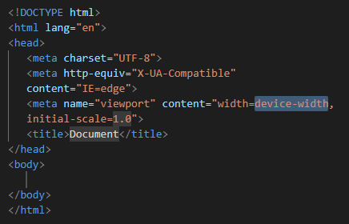

A linguagem HTML (ou Linguagem de Marcação de Hipertexto) é uma linguagem focada para o desenvolvimento de sites para a Web.
Ela foi desenvolvida inicialmente em 1991 por Tim Berners1, projetado para interligar instituições e compartilhar informações com mais facilidade.
Hoje, o HTML segue sendo essencial para a construção de sites para Web e qualquer um que possua um computador, um navegador (ou Browser) em casa, pode começar a desenvolver facilmente seu primeiro site.
O HTML possui uma estrutura básica para inicial seu site na Web.
Ele é composto por Tags e Atributos que vamos falar mais a frente. Por exemplo, para que nosso site funcione, é necessário que ele tenha nossa Tag html onde ficará toda a construção do site.
Em seguida, ele é composto pelo nosso head, onde ficarão as configurações do nosso site da Web, nele, podemos colocar o tittle (ou título) da nossa página na Web, configurar o nosso Favicon e o idioma do nosso site.
As Tags são utilizadas para informar ao navegador que irá ler nosso site em
Este parágrafo que você está lendo agora, está dentro de uma Tag por exemplo, e ela é escrita desta maneira: <p> </p>
O p inicial está realizando a abertura, enquanto que o /p está fechando a Tag, em alguns casos, a Tag não necessáriamente poderá ser fechada, que é o exemplo da Tag <img>, que é nossa Tag de imagem.
O Atributos servem como parâmetros para nossas Tags, como se fossem algumas configurações que queremos nelas. A imagem anterior de um gato precisou receber alguns parâmetros para o nosso navegador poder ler:
<img src= "Caminho da nossa imagem" alt="Texto alternativo da nossa imagem" width="Tamanho da nossa imagem">
Existem Tags que vamos utilizar mais no dia a dia e que são as mais básicas, mas existem ainda mais possibilidades de utilizar Tags diferentes.
Podemos modificar a fonte destes textos.
Alterar sua cor...
E muito mais!...